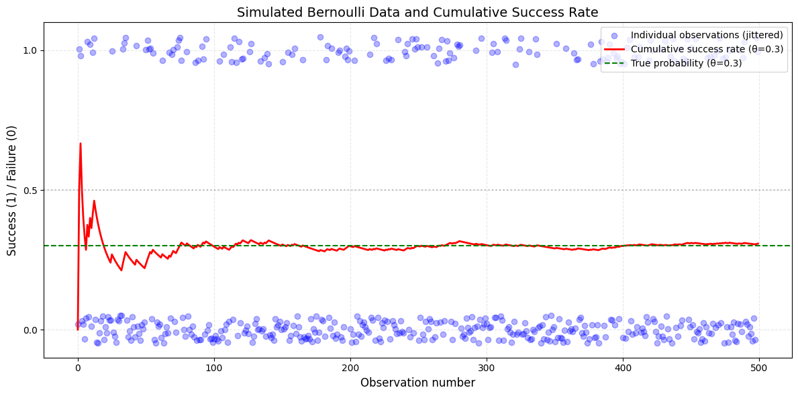
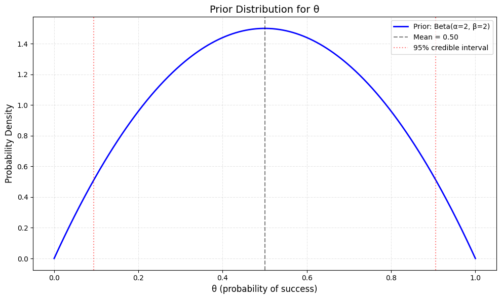
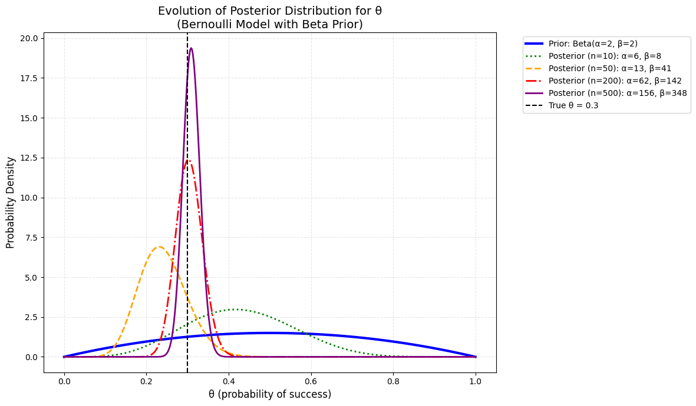
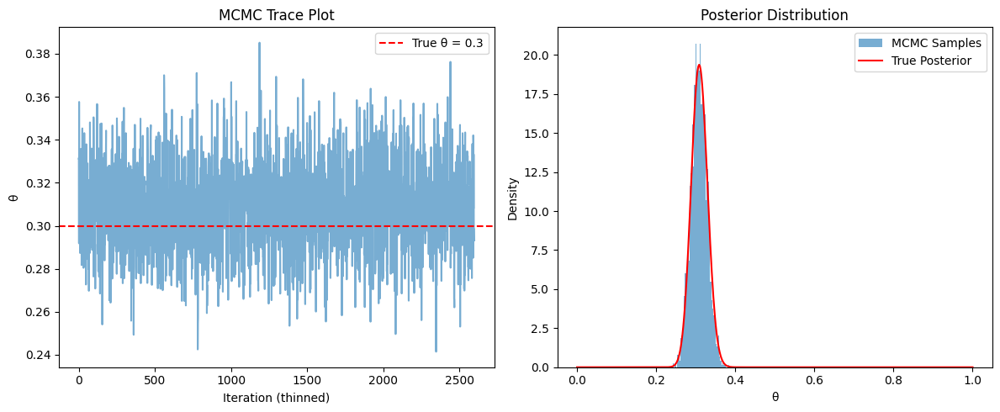

import numpy as np
import matplotlib.pyplot as plt
from scipy.stats import norm, betaCoin Flipping
Packages
np.random.seed(42)Introduction
In this notebook, we study a simple probabilistic model for coin flipping. We assume each flip results in either a head (1) or tail (0), modeled as a Bernoulli random variable with unknown success probability \(\theta\). Our goals are to:
- Simulate coin flips under a known value of \(\theta\)
- Specify the likelihood function for a sequence of flips
- Visualize simulated outcomes and their empirical properties
- Use the likelihood to explore inference on \(\theta\)
This example provides an intuitive foundation for understanding Bayesian updating in discrete probability models.
Model Specification
Let \(y_i\) be the result of flipping a coin which lands on heads with probability \(\theta\) and tails with probability \(1-\theta\). If it lands on heads we set \(y_i = 1\) and if it lands on tails we set \(y_i = 0\). We therefore have that each observation \(y_i\) follows a Bernoulli distribution:
\[
y_i \mid \theta \sim \text{Bernoulli}(\theta), \quad i = 1, \dots, N,
\]
where \(\theta\) is the probability of success.
Given \(N\) i.i.d. observations \(\mathbf{y} = (y_1, \dots, y_N)\), the joint likelihood is:
\[
p(\mathbf{y} \mid \theta) = \prod_{i=1}^N p(y_i \mid \theta) = \prod_{i=1}^N \theta^{y_i} (1 - \theta)^{1 - y_i}.
\]
Let \(S = \sum_{i=1}^N y_i\) (total successes). The likelihood becomes:
\[
p(\mathbf{y} \mid \theta) = \theta^S (1 - \theta)^{N - S}.
\]
Visualise Simulated Data
# Parameter values
N = 500 # Number of observations
true_theta = 0.3 # True probability of success
# Generate simulated Bernoulli data
y = np.random.binomial(n=1, p=true_theta, size=N)
# Calculate cumulative success rate
cumulative_success = np.cumsum(y)
cumulative_rate = cumulative_success / (np.arange(N) + 1)# Create plot
plt.figure(figsize=(12, 6))
# Plot raw binary data (jittered for visibility)
plt.scatter(np.arange(N), y + np.random.uniform(-0.05, 0.05, N),
alpha=0.3, label='Individual observations (jittered)', color='blue')
# Plot cumulative success rate
plt.plot(cumulative_rate, 'r-', linewidth=2,
label=f'Cumulative success rate (θ={true_theta})')
# Add horizontal lines for reference
plt.axhline(y=true_theta, color='green', linestyle='--',
label=f'True probability (θ={true_theta})')
plt.axhline(y=0.5, color='gray', linestyle=':', alpha=0.5)
# Customize plot
plt.title('Simulated Bernoulli Data and Cumulative Success Rate', fontsize=14)
plt.xlabel('Observation number', fontsize=12)
plt.ylabel('Success (1) / Failure (0)', fontsize=12)
plt.ylim(-0.1, 1.1)
plt.yticks([0, 0.5, 1])
plt.grid(True, linestyle='--', alpha=0.3)
plt.legend(fontsize=10, loc='upper right')
plt.tight_layout()
plt.show()
Prior Distribution
We assume a Beta prior for \(\theta\):
\[
\theta \sim \text{Beta}(\alpha, \beta),
\]
with hyperparameters \(\alpha, \beta > 0\).
# Prior parameters (Beta distribution)
alpha_0 = 2 # Prior "successes" + 1
beta_0 = 2 # Prior "failures" + 1# Create grid of theta values
theta_grid = np.linspace(0, 1, 500)
# Calculate prior density
prior_density = beta.pdf(theta_grid, a=alpha_0, b=beta_0)
# Create plot
plt.figure(figsize=(10, 6))
plt.plot(theta_grid, prior_density, 'b-', linewidth=2,
label=f'Prior: Beta(α={alpha_0}, β={beta_0})')
# Highlight mean and 95% credible interval
mean = alpha_0 / (alpha_0 + beta_0)
ci_low, ci_high = beta.ppf([0.025, 0.975], a=alpha_0, b=beta_0)
plt.axvline(mean, color='k', linestyle='--', alpha=0.5,
label=f'Mean = {mean:.2f}')
plt.axvline(ci_low, color='r', linestyle=':', alpha=0.5)
plt.axvline(ci_high, color='r', linestyle=':', alpha=0.5,
label='95% credible interval')
# Customize plot
plt.title('Prior Distribution for θ', fontsize=14)
plt.xlabel('θ (probability of success)', fontsize=12)
plt.ylabel('Probability Density', fontsize=12)
plt.legend(fontsize=10)
plt.grid(True, linestyle='--', alpha=0.3)
plt.tight_layout()
plt.show()
Posterior Distribution
The posterior is proportional to:
\[
p(\theta \mid \mathbf{y}) \propto \theta^S (1 - \theta)^{N - S} \cdot \theta^{\alpha-1} (1 - \theta)^{\beta-1} = \theta^{\alpha + S - 1} (1 - \theta)^{\beta + N - S - 1}.
\]
This is a Beta distribution:
\[
\theta \mid \mathbf{y} \sim \text{Beta}(\alpha + S, \beta + N - S).
\]
# Define observation subsets
observation_subsets = [10, 50, 200, 500] # Different sample sizes to plot
colors = ['green', 'orange', 'red', 'purple']
line_styles = [':', '--', '-.', '-']
# Create grid of theta values
theta_grid = np.linspace(0, 1, 500)
# Create plot
plt.figure(figsize=(12, 7))
# Plot prior
prior_density = beta.pdf(theta_grid, alpha_0, beta_0)
plt.plot(theta_grid, prior_density, 'b-', linewidth=3,
label=f'Prior: Beta(α={alpha_0}, β={beta_0})')
# Plot posteriors for different observation counts
for n_obs, color, ls in zip(observation_subsets, colors, line_styles):
# Calculate posterior parameters
S = np.sum(y[:n_obs]) # Number of successes
F = n_obs - S # Number of failures
alpha_post = alpha_0 + S
beta_post = beta_0 + F
# Calculate posterior density
posterior_density = beta.pdf(theta_grid, alpha_post, beta_post)
# Plot
plt.plot(theta_grid, posterior_density, color=color, linestyle=ls, linewidth=2,
label=f'Posterior (n={n_obs}): α={alpha_post}, β={beta_post}')
# Add true theta line
plt.axvline(true_theta, color='k', linestyle='--',
label=f'True θ = {true_theta}')
# Customize plot
plt.title('Evolution of Posterior Distribution for θ\n(Bernoulli Model with Beta Prior)', fontsize=14)
plt.xlabel('θ (probability of success)', fontsize=12)
plt.ylabel('Probability Density', fontsize=12)
plt.legend(fontsize=10, bbox_to_anchor=(1.05, 1), loc='upper left')
plt.grid(True, linestyle='--', alpha=0.3)
plt.tight_layout()
plt.show()
Sampling From The Posterior
To implement the MH algorithm assume that at iteration \(t\), given a sample value at iteration \(t-1\), \(\beta_{t-1}\) we perform the following:
- Generate a candidate value, \(\beta_c\), from the proposal distribution \(q(\beta_c|\beta_{t-1})\).
- Calculate the Metropolis-Hastings ratio, MHR: \[
\text{MHR}(\beta_{t-1}, \beta_c) = \frac{p(\beta_c) \cdot q(\beta_{t-1}|\beta_c)}{p(\beta_{t-1}) \cdot q(\beta_c|\beta_{t-1})}
\] Note that this ratio can be larger than 1.
- Generate a \(\text{Uniform}(0,1)\) random variable \(u\).
- Accept/Reject:
- If \(u \leq \min(1, \text{MHR}(\beta_{t-1}, \beta_c))\), then set \(\beta_t = \beta_c\) (i.e. “keep” \(\beta_c\)).
- Else, set \(\beta_t = \beta_{t-1}\).
- Set \(t = t + 1\) and go back to Step 1.
# Log-posterior function (up to a constant)
def log_posterior(theta, y, alpha_0, beta_0):
if theta <= 0 or theta >= 1: # Reject values outside [0,1]
return -np.inf
# Log-likelihood (Bernoulli)
S = np.sum(y)
log_likelihood = S * np.log(theta) + (len(y) - S) * np.log(1 - theta)
# Log-prior (Beta)
log_prior = (alpha_0 - 1) * np.log(theta) + (beta_0 - 1) * np.log(1 - theta)
return log_likelihood + log_prior# Metropolis-Hastings function
def metropolis_hastings(y, alpha_0, beta_0, initial_theta=0.5,
n_samples=10000, step_size=0.05):
theta_samples = np.zeros(n_samples)
theta_current = initial_theta
accepted_count = 0
for i in range(n_samples):
# Sample from proposal distribution (truncated normal)
theta_proposed = np.random.normal(theta_current, step_size)
# Compute log acceptance ratio
log_alpha = (log_posterior(theta_proposed, y, alpha_0, beta_0) -
log_posterior(theta_current, y, alpha_0, beta_0))
# Accept/reject
if np.log(np.random.rand()) < log_alpha and 0 < theta_proposed < 1:
theta_current = theta_proposed
accepted_count += 1
theta_samples[i] = theta_current
acceptance_rate = accepted_count / n_samples
print(f"Acceptance rate: {acceptance_rate:.2f}")
return theta_samples# Run MCMC
theta_samples = metropolis_hastings(y=y, alpha_0=alpha_0, beta_0=beta_0,
initial_theta=0.5, n_samples=15000,
step_size=0.08)Acceptance rate: 0.31# Burn-in and thinning
burn_in = 2000
thinned_samples = theta_samples[burn_in::5]
# Plot results
plt.figure(figsize=(12, 5))
# Trace plot
plt.subplot(1, 2, 1)
plt.plot(thinned_samples, alpha=0.6)
plt.xlabel("Iteration (thinned)")
plt.ylabel("θ")
plt.title("MCMC Trace Plot")
plt.axhline(true_theta, color='r', linestyle='--', label=f'True θ = {true_theta}')
plt.legend()
# Posterior histogram
plt.subplot(1, 2, 2)
plt.hist(thinned_samples, bins=50, density=True, alpha=0.6,
label='MCMC Samples')
# Analytical posterior for comparison
S = np.sum(y)
alpha_post = alpha_0 + S
beta_post = beta_0 + len(y) - S
x_grid = np.linspace(0, 1, 500)
plt.plot(x_grid, beta.pdf(x_grid, alpha_post, beta_post),
'r-', label='True Posterior')
plt.xlabel("θ")
plt.ylabel("Density")
plt.title("Posterior Distribution")
plt.legend()
plt.tight_layout()
plt.show()
# Print summary statistics
print(f"Posterior mean: {np.mean(thinned_samples):.3f}")
print(f"Posterior 95% credible interval: {np.percentile(thinned_samples, [2.5, 97.5])}")
Posterior mean: 0.308
Posterior 95% credible interval: [0.27002716 0.34923126]